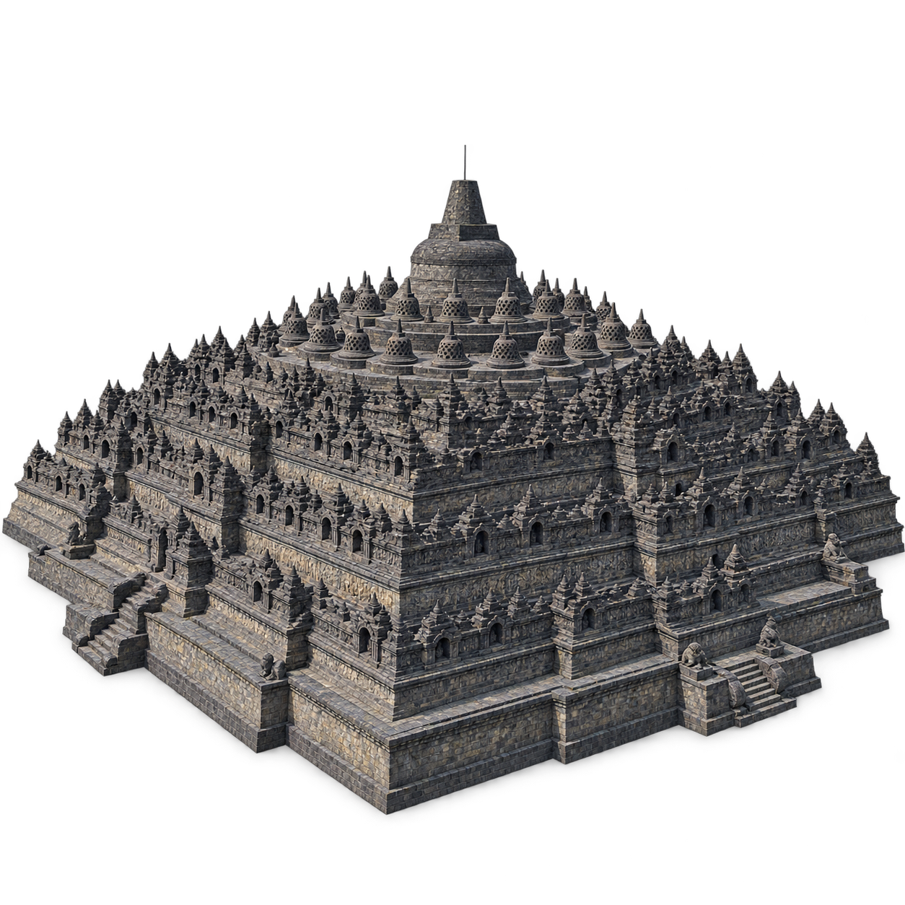
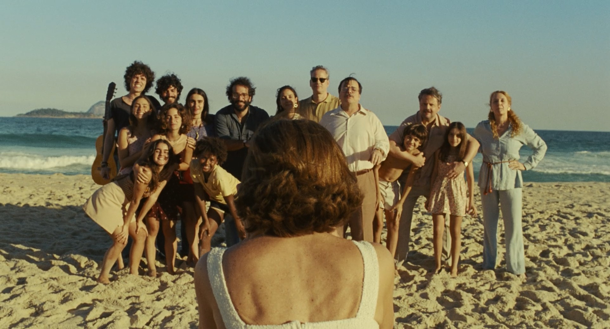
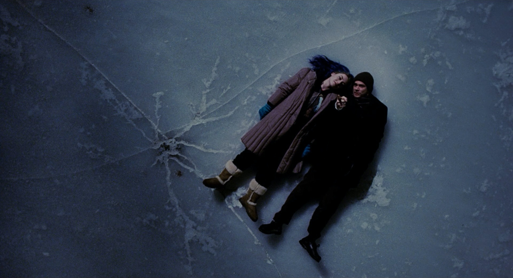

Borobudur
Architecture · Central Java · 8th–9th centuries
Architecture and sculpture as isolated forms. Music as vinyl records. Cinema through individual frames.

Architecture · Central Java · 8th–9th centuries
Sculpture · Nara · First consecration 752
One complete form. Clear space around its silhouette.
Soft, consistent lighting. Enough shadow to show depth.
Keep stone and bronze distinct. Avoid a generic plastic finish.
The same vinyl photograph, with each work’s artwork at the center.
Ludwig van Beethoven
Manuscript artwork
Billie Holiday
Original release label
João Gilberto
1959 album artwork
Original framing and color, with each film’s proportions preserved.

Eunice photographs her family and friends on the beach.

Joel and Clementine lie together on the frozen lake.
Joe crosses a sunlit New York street.
These are generated interpretations for choosing a visual direction. Borobudur’s elevated view reconstructs details unseen in the source. The Buddha study omits the gold halo and reconstructs parts of the pedestal. These details need a fidelity review before publication. The original entry images remain available.
Borobudur source: Gunawan Kartapranata, 2008, Wikimedia Commons, CC BY-SA 3.0. Great Buddha source: Fg2, Wikimedia Commons, public-domain dedication. Reference records and generation prompts are saved beside this study.
The vinyls are presentation mockups, not reproductions of historical pressings. Beethoven uses manuscript artwork; Strange Fruit uses its original release label; Chega de Saudade uses the 1959 album cover for the 1958 song recording.